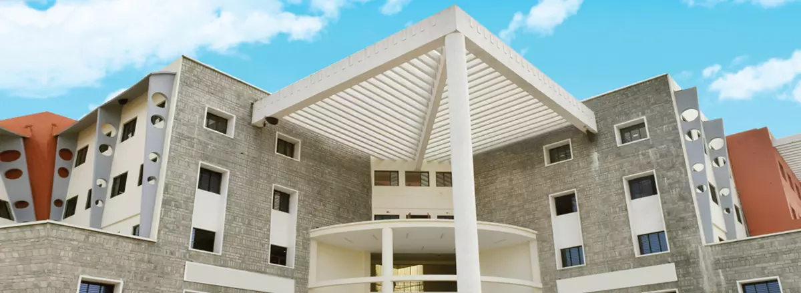

Modern Classrooms
Flexible learning environments for discussion, collaboration and focused study.
A PLACE TO MAKE YOUR OWN
Find the spaces, people and experiences that make every day part of your education.

LEARNING, IN EVERY DIRECTION
From collaborative classrooms to quiet study spaces, campus life gives students places to focus, experiment and connect with their community.
Plan a conversation →MADE FOR EVERY DAY
Flexible learning environments for discussion, collaboration and focused study.
Practical spaces for experimentation, technical learning and project work.
Resources and quiet corners that make space for independent discovery.
Stay active and find your team through sport and recreation.
A supportive residential community for students coming from further afield.
A place to shape early ideas into thoughtful prototypes and projects.